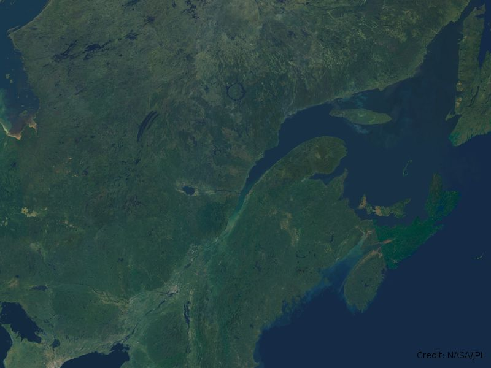
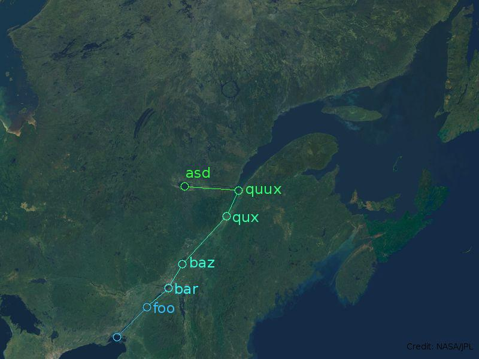
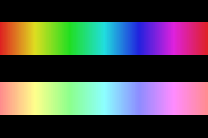
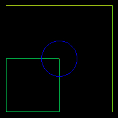
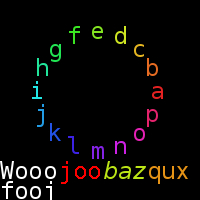
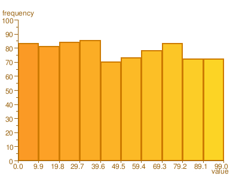

with macrosSeveral graphic libraries are available for the Common Lisp programmer. Those feature several low level operations with incompatible interfaces. The goal of poly-pen is to offer a higher level interface to graphic manipulation without committing to a particular low level back-end.
The term "proxy" defines well poly-pen. It lets the programmer define hi-level drawing operations and switch at will the back-end used to perform the low level primitives.
Lets start with an example, consider this image

vect, a geometric vector, that we can add
and subtract to the primitive shapes to perform translations. In
poly-pen we can use the basic shapes
point, line,
rect and circle and
draw them all with the single primitive
draw.We can specify colors in RGB or in HSV, poly-pen will do the
conversion automaticly when needed. The utility function
make-color-spiral is supplied to pick a color
map on a rainbow slice. I think we are ready for the code.
(defun example1-core (input output backend)
"draw a path on a map with a circle at stop points"
(let* ((*canvas* (image input :backend backend))
(*default-font* (font "Vera" :backend backend))
;; displacement vectors from one stop to the other
(path (mapcar #'vect
'((50 50) (36 32) (23 40) (74 80) (20 43) (-90 7))))
;; those stops have a name
(names '("foo" "bar" "baz" "qux" "quux" "asd"))
;; current location
(loc (point '(195 36)))
;; circles radius
(rad 7)
;; pick a few colors to show progression along the path
(cols (make-color-spiral (length path) 1 1 .8 .55 .25 nil)))
;; 1st stop, draw a circle
(draw (circle loc rad) :col (elt cols 0))
(mapcar #'(lambda (seg col name)
;; compute the space to skip, we don't want to draw
;; the path inside the circle, rounded to the closest pixel
(let ((pad (map-coords #'round (mult (normalize seg) rad))))
(draw (line (add loc pad)
(sub (setf loc (add loc seg)) pad))
:col col)
(draw (circle loc rad) :col col)
;; label the stop point at 90 degree from the path
(draw (add name
(mult 2 (2d-vect (y pad) (- (x pad))))
(vect loc)) :col col)))
path (coerce cols 'list) names)
(save output)))
|
example1-core we get this image

We can define colors with the classes
rgb and hsv. Both
have an eponym constructor method that either takes a three
element list or an other color in order to perform a conversion.
The tree channels are in the closed range [0..1]. The class
rgb-24 is supplied for users who prefer to
work in the closed range [0..255].
POLY-PEN> (rgb '(.5 .5 .5)) #<RGB 0.5 0.5 0.5> POLY-PEN> (hsv '(.5 .5 .5)) #<HSV 0.5 0.5 0.5> POLY-PEN> (rgb (hsv '(.5 .5 .5))) #<RGB 0.25 0.5 0.5> |
(defun example5 ()
(let* ((width 300)
(height 200)
(cols (make-color-spiral width .87)))
(with-defaults (:backend
:sdl
:canvas (:width width :height height))
(dotimes (x width)
(draw (line (2d-point x (/ height 6))
(2d-point x (/ height 2.5)))
:col (add (hsv (elt cols x)) '(0 -.4 1))
:map-coords #'round)
(draw (line (2d-point x (* 1.5 (/ height 2.5)))
(2d-point x (* 5 (/ height 6))))
:col (elt cols x)
:map-coords #'round))
(save #p"example5.bmp"))))
|

We can do basic operations on primitive shapes like adding
vectors to them for translations. The basic shapes are
point, line,
rect and circle. All
the operations on primitive shapes are non-destructive, we always
get a freshly allocated shape. A simple functional interface is
supplied to interact with the shapes coordinates: the functions
map-coords,
reduce-coords,
every-coords and
some-coords
POLY-PEN> (rect '(10 10) '(90 90)) #<RECT (10, 90) 80x80> POLY-PEN> (right-side (rect '(10 10) '(90 90))) #<LINE (90, 90) (90, 10)> POLY-PEN> (add (right-side (rect '(10 10) '(90 90))) (vect '(10 10))) #<LINE (100, 100) (100, 20)> POLY-PEN> (map-coords #'1+ (point '(0 0))) #<2D-POINT (1, 1)> POLY-PEN> (normalize (vect '(5 5))) #<2D-VECT (0.7071068, 0.7071068)> POLY-PEN> (every-coords #'integerp (normalize (vect '(5 5)))) NIL POLY-PEN> (every-coords #'integerp (map-coords #'round (vect '(.707 .707)))) T |
Drawing in poly-pen is performed on a
canvas. It's the canvas that link the
drawing primitive to the graphic back-end. At canvas creation
time, you can specify which back-end you want to use. All the
other operations on that canvas will use the specicfied back-end.
The canvas creation methods are canvas,
to get a blank (well, black in most cases) canvas and
image, to create the canvas from an image
file. Different back-ends support different image formats and
canvas parameter. In example, the
sdl-canvas support the
:depth creation keyword.
POLY-PEN> (canvas)
#<SDL-CANVAS {58316975}>
POLY-PEN> (canvas :backend :gd)
#<GD-CANVAS {5833E115}>
POLY-PEN> (canvas :backend :gd :height 100 :width 100 :true-color t)
#<GD-CANVAS {5835CC7D}>
POLY-PEN> (image #p"home.jpg" :backend :sdl)
#<SDL-CANVAS {58384345}> |
All the drawing operations are performed on
*canvas* by default. We can override this
behavior by using the :canvas keyword.
The drawing of the primitive shapes is done with
draw. Thanks to CLOS multi-methods, the
dispatch is done on both the canvas type and the shape being
drawn. Different shapes draws with different back-ends will
support different keywords. In example, the
:filled keyword is supported for drawing
rectangles but has no effect when drawing lines.
Since most back-ends are interface to C code, we can't
expect the garbage collector to reclaim the
canvas once we are finished with it. The
method free is supplied to reclaim the
resources used by a canvas.
Finally, once we are happy with our drawing we can save the
canvas with save.
The argument to save is either a stream
or a pathname.
(defun example2 ()
(let ((*canvas* (canvas :width 200 :height 200)))
(mapcar #'(lambda (shape col) (draw shape :col col))
(list (rect '(10 10) '(100 100))
(circle '(100 100) 30)
(point '(100 100))
(line '(10 190) '(190 190))
(line '(190 190) '(190 10)))
(list (hsv '(.4 1 1))
(rgb '(0 0 1))
(rgb '(1 0 0))
(hsv '(.2 .9 .9))
(hsv '(.25 .9 .9))))
(free *canvas*)
(save #p"foo.bmp")))
|

Most back-ends will support the rendering of hi-quality text
on images using True Type fonts. In poly-pen, we load fonts with
font and reclaim their resources with
free. We can pass
font a string representing the name of
the font or a pathname leading to the .ttf
file. Just like with shapes, text is drawn with
draw. We can pass a string to be drawn
right to the last text (at the origin if it's the first text
operation) or translate our string by adding it to a displacement
vector. The specified position corresponds to the left of
baseline.
(defun example3 ()
(let* ((msg "abcdefghijklmnop")
(cols (make-color-spiral (length msg) .9))
(angle (/ pi (length msg) .5)))
(with-defaults (:backend
:gd
:canvas (:width 200 :height 200)
:font ("VeraMono")
:colors ((rgb '(0 0 0))
(rgb '(1 1 1))))
(draw "fooj")
(draw (add "Wooo" '(0 20)))
(draw "joo" :col (rgb '(1 0 0)) :blended nil)
(draw "baz" :font (font "VeraIt") :col (hsv '(.2 .9 .9)))
(draw "qux" :col (hsv '(.1 .9 .9)))
(dotimes (x (length msg))
(draw (add (string (elt msg x))
(map-coords #'round
(2d-vect (* 60 (cos (* x angle)))
(* 60 (sin (* x angle)))))
(2d-vect 90 100))
:col (elt cols x)))
(save #p"example3.png"))))
|

width and
height on a string to see how large it
gets when rendered with a particular font. SDL also supports
ascent and
descent to know how far up and down the
font goes from the baseline.
At the time of writing this document only one hi-level plot
is available in poly-pen, the histogram. To draw an histogram on a
fresh canvas, we just pick our favorite data set and pass it to
histogram. The histogram will fill the
available space. It's possible to customize the appearance with
the keyword arguments.
(defun example4 ()
(let ((data nil))
(with-defaults (:backend
:gd
:canvas (:width 400 :height 300)
:font ("FreeSans" :size 14))
(dotimes (x (+ 50 (random 100)))
(push (random 100) data))
(histogram data :text-col (hsv '(.1 .9 .6)))
(free *default-font*)
(save #p"example4.png"))))
|

with macrosOf course we forget to free resources when we are finished
with them, the garbage collector made us lenient. poly-pen provides
a few macros to help us keep track of the resources:
with-canvas,
with-default-canvas,
with-image,
with-default-image,
with-font,
with-default-font,
with-default-backend,
with-default-colors and a composite of all or
them, with-defaults.
Thats about it for now. A complete reference on the
capabilities of each back-end is on it's way and more hi-level
operations too. Report bugs to
<ygingras@ygingras.net>. I'd like to thank my
university, UQAM, for
supporting me while I was writing this proxy layer.